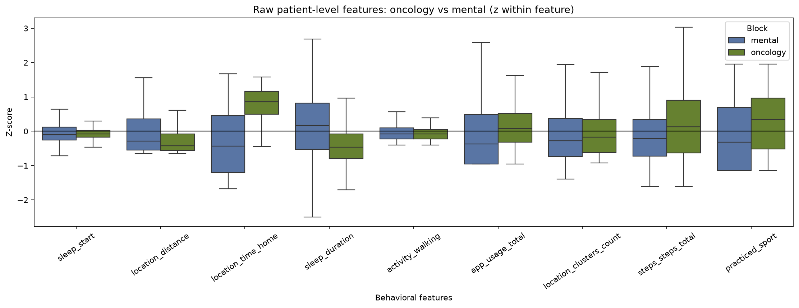
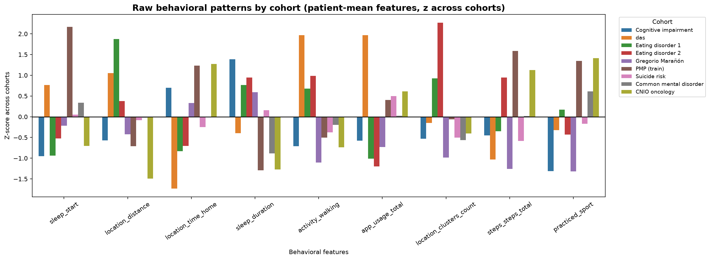
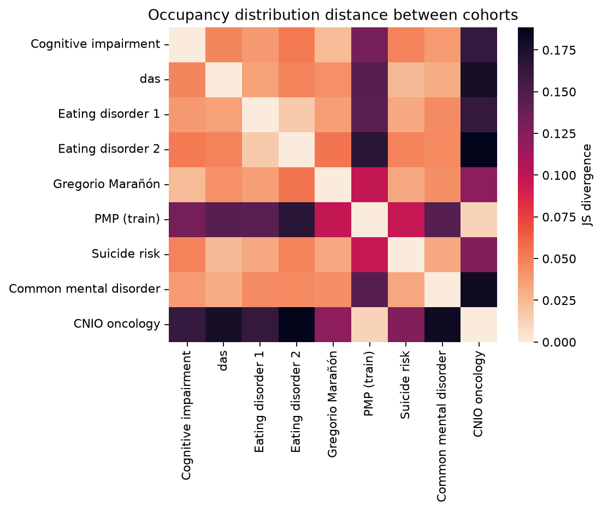
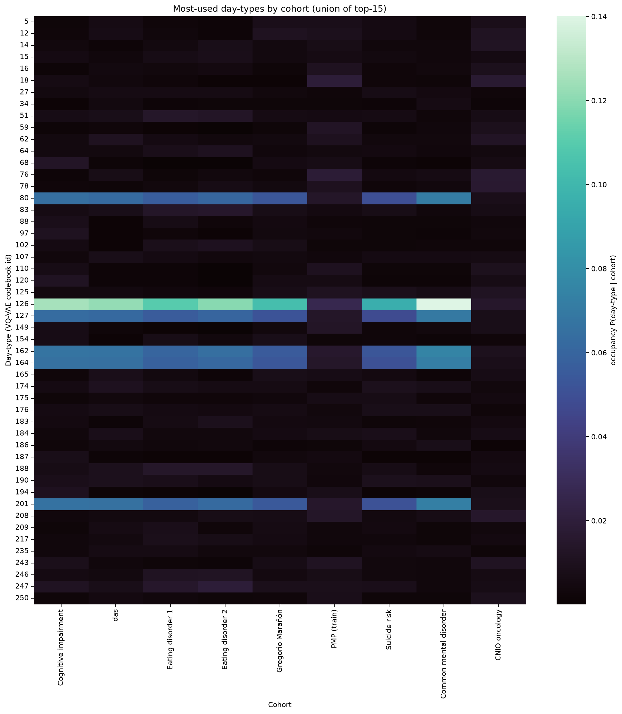
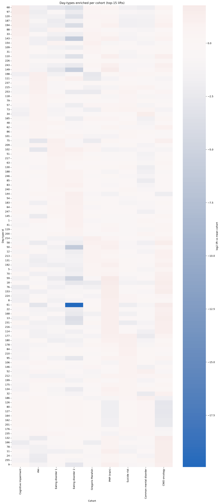
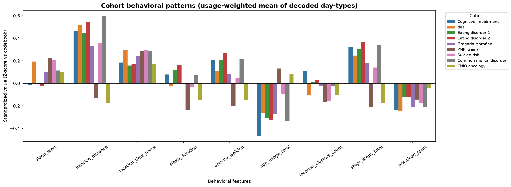
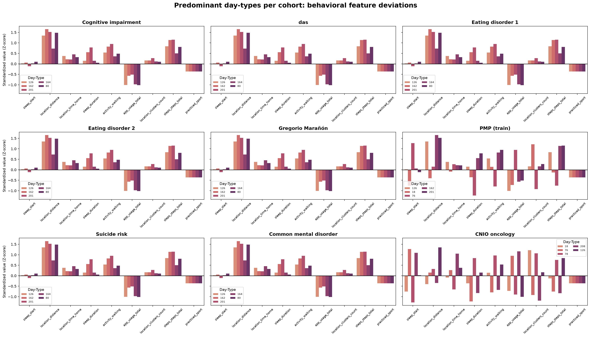
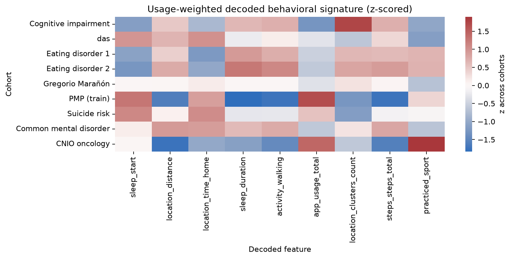
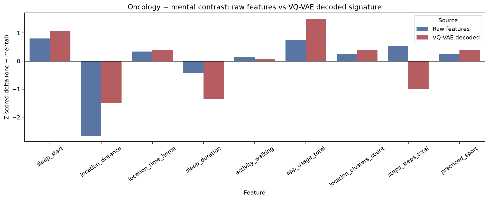

Diseño del experimento
Grupos: CI, das, ED1, ED2, GM, PMP, SR, TMC (muestreados del daily summary de entrenamiento)
y CNIO (90 pacientes del cohort oncológico del estudio; cnio_caspar solo tiene ~11 usuarios).
Encoding con el mismo pipeline que daily_to_profiles (modelo a0).
1. Comparación raw (antes del VQ-VAE)
Diferencias significativas (FDR < 0.05)
| Feature | Media oncología | Media mental | Δ (onc − mental) | Cohen’s d | p FDR |
|---|---|---|---|---|---|
| location_time_home | 1021 | 554 | +467 | 1.29 | <0.001 |
| location_distance | 16 673 | 32 976 | −16 303 | −0.38 | 0.003 |
| sleep_duration | 30 707 | 34 460 | −3 753 | −0.51 | <0.001 |
| app_usage_total | 11 444 | 8 702 | +2 742 | 0.28 | <0.001 |
| steps_steps_total | 7 243 | 5 582 | +1 662 | 0.45 | <0.001 |
| practiced_sport | 0.46 | 0.34 | +0.12 | 0.39 | <0.001 |
| activity_walking | 2 968 | 3 534 | −566 | −0.07 | 0.64 (NS) |
| sleep_start | −1 366 | −4 444 | +3 078 | 0.14 | 0.60 (NS) |


2. Cómo se ocupan los perfiles (day-types VQ-VAE)
Tras pasar los mismos pacientes por el encoder, cada día se asigna a un código del codebook (0–255). Medimos P(day-type | cohorte) y la distancia entre distribuciones (JS divergence).



3. Decodificación a patrones conductuales
Cada day-type se traduce a un vector de features con
decoded_embedding_vectors_a0.pkl, en z-score respecto al codebook
(mismo criterio que las figuras de patrones del manuscript).



location_distance, walking/steps en el espacio de prototipos),
más app y sueño algo más corto; mental carga day-types de mayor distancia/pasos (p.ej. 126, 162, 201).
4. Raw vs VQ-VAE: ¿dicen lo mismo?
Contraste oncología − mental en forma estandarizada: medias raw de paciente vs firma VQ-VAE decodificada. Correlación de rangos de los deltas ≈ 0.77 (p≈0.02): patrón global alineado, no idéntico.

| Feature | Acuerdo de signo | Nota |
|---|---|---|
| location_distance, sleep_duration, app_usage | Sí | Núcleo estable del contraste |
| steps_steps_total | No | Raw: onc ↑ · VQ-VAE decode: onc ↓ |
| location_time_home | No / débil | Muy fuerte en raw; casi plano en decode ponderado |
Conclusiones para la revisión
- Raw: oncología y mental ya difieren de forma significativa (FDR) en movilidad, sueño, app y deporte.
- Ocupación: CNIO ≈ PMP; ambos se separan del bloque mental (JS ~4× mayor entre bloques que dentro de mental).
- Uso del codebook: mental más concentrado; cáncer más diverso en day-types.
- Decode: firmas conductuales coherentes con menor desplazamiento y más app en cáncer.
- Raw + VQ-VAE juntos: el modelo no inventa la separación, pero añade estructura de perfiles que conviene mostrar frente a univariantes.